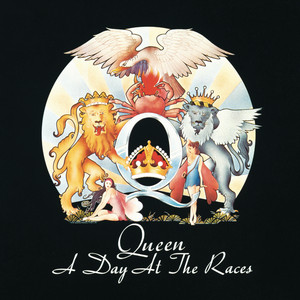

[Intro] Can anybody find me Somebody to love? [Verse 1] Ooh, each mornin' I get up I die a little Can barely stand on my feet Take a look at yourself in the mirror and cry Take a look in the mirror and cry Lord, what you're doing to me? (Yeah, yeah) I have spent all my years in believin' you (Ooh) But I just can't get no relief, Lord [Chorus] Somebody (Somebody) Ooh, somebody (Somebody) Can anybody find me Somebody to love? Yeah [Verse 2] I work hard (He works hard) every day of my life I work 'till I ache my bones At the end (At the end of the day) I take home My hard-earned pay all on my own (Goes home, goes home on his own) I get down (Down) on my knees (Knees) and I start to pray (Praise the Lord) 'Till the tears run down from my eyes, Lord (Ooh) You might also like St. Chroma Tyler, The Creator Story of My Life One Direction Darling, I Tyler, The Creator [Chorus] Somebody (Somebody) Ooh, somebody (Please) Can anybody find me Somebody to love? Oh [Bridge] (He works hard) everyday (Everyday) I try and I try and I try But everybody wants to put me down (Ooh) They say I'm goin' crazy (Ooh) They say I got a lot of water in my brain (Ah) I got no common sense (He's got) I got nobody left to believe (Yeah, yeah, yeah, yeah) [Guitar solo] [Chorus] (Ooh, ooh, ooh, Lord) Ooh, somebody Ooh (Somebody) Anybody find me Somebody to love Can anybody find me Someone to love? [Verse 3] Got no feel, I got no rhythm I just keep losin' my beat (You just keep losing and losing) I'm okay, I'm alright (He's alright, he's alright) I ain't gonna face no defeat (Yeah, yeah) I just gotta get out of this prison cell (Ooh) (One day) Someday I'm gonna be free, Lord [Outro] Find me somebody to love Find me somebody to love Find me somebody to love (Uh-uh, ooh) Find me somebody to love Find me somebody to love (Find me, find me) Find me somebody to love (Find me) Find me somebody to love Find me somebody to love (Ooh, find me, find me) Find me somebody to love (Somebody to love) Find me somebody to love (Ooh) Somebody (Somebody) Somebody (Somebody) Somebody (Find me) Somebody find me somebody to love (Ooh) Can anybody find me Somebody to love? (Find me somebody to love) Ooh (Find me somebody to love) Find me somebody (Find me somebody to love) Somebody, somebody, somebody to love (Find me somebody to love) Find me, find me Find me, find me, find me (Find me somebody to love) Ooh, somebody to love (Find me somebody to love) Ooh, find me, find me (Find me somebody to love) Find me somebody to love (Find me somebody to love) Anybody, anywhere, anybody Find me somebody to love, love Find me, find me, find me, find me